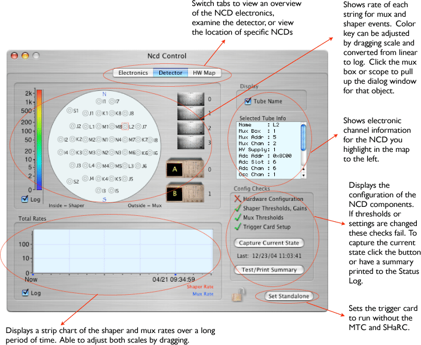
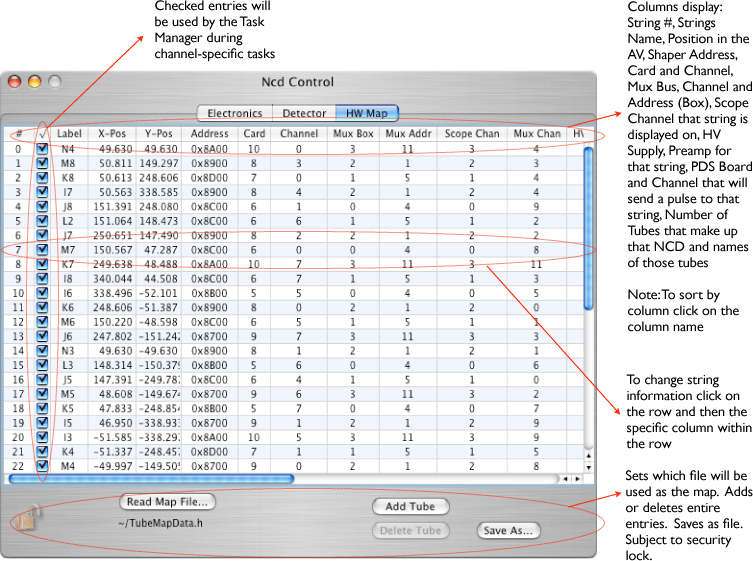
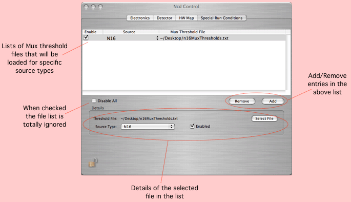

The configuration icon for the SNO-NCD Experiment is: 
This window contains information specific to the SNO-NCD Experiment.



Loading Special Mux Thresholds
By using the 'Special Run Conditions' dialog, you can specify special sets of mux thresholds for each type of source run. Just select the type of source and a file. The ascii file format is:
0x10 80 85 77
91 88 78 82
91 76 71 67
89 73 67 86
99 79 76 89
100 59 97 53
100 65 82 79
99 66 84 78
95 68 81 68
90 68 80 60
99 59 74 69
104 75 52 67
16 2 45 49
There should be 13 columns of threshold values (one for each channel) and four rows (one for each mux). You can use either hex or decimal format. The columns can be delimited by any white space.
NCD Tasks
The NCD object manages four tasks.
Record Format
version 2 (new format)
Pulser Record that is shipped when the calibration tasks adjust the pulser settings:
xxxx xxxx xxxx xxxx xxxx xxxx xxxx xxxx Header Word ^^^^ ^^^^ ^^^^ ^^----------------------- NcdModel PulserSetting Record ID (from header) -----------------^^-^^^^ ^^^^ ^^^^ ^^^^- Length (fixed at 24 bytes) xxxx xxxx xxxx xxxx xxxx xxxx xxxx xxxx Global Trigger ID xxxx xxxx xxxx xxxx xxxx xxxx xxxx xxxx Pulser waveform (int) xxxx xxxx xxxx xxxx xxxx xxxx xxxx xxxx Pulser amplitude (float) xxxx xxxx xxxx xxxx xxxx xxxx xxxx xxxx Pulser burst rate (float) xxxx xxxx xxxx xxxx xxxx xxxx xxxx xxxx Pulser width (float)The NcdModel can also ship task start/stop records:
version 1 (old format)
Pulser Record that is shipped when the calibration tasks adjust the pulser settings:
xxxx xxxx xxxx xxxx xxxx xxxx xxxx xxxx Header Word ^^^^ ^^^^ ^^^^ ^^^^--------------------- NcdModel PulserSetting Record ID (from header) --------------------^^^^ ^^^^ ^^^^ ^^^^- Length (fixed at 24 bytes) xxxx xxxx xxxx xxxx xxxx xxxx xxxx xxxx Global Trigger ID xxxx xxxx xxxx xxxx xxxx xxxx xxxx xxxx Pulser waveform (int) xxxx xxxx xxxx xxxx xxxx xxxx xxxx xxxx Pulser amplitude (float) xxxx xxxx xxxx xxxx xxxx xxxx xxxx xxxx Pulser burst rate (float) xxxx xxxx xxxx xxxx xxxx xxxx xxxx xxxx Pulser width (float)The NcdModel can also ship task start/stop records: